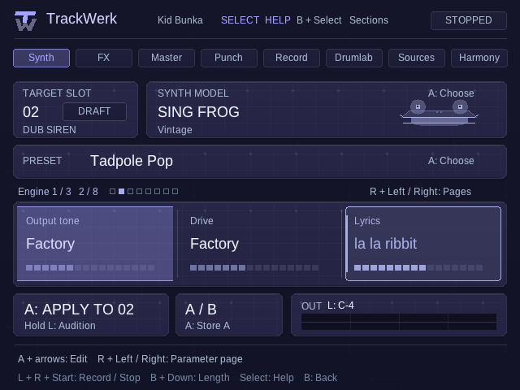
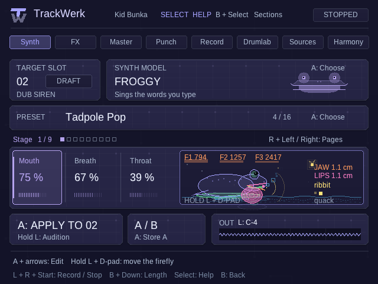
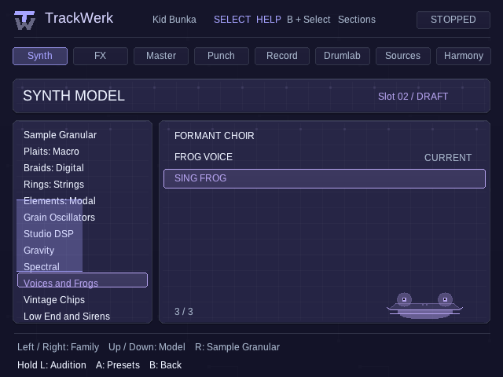
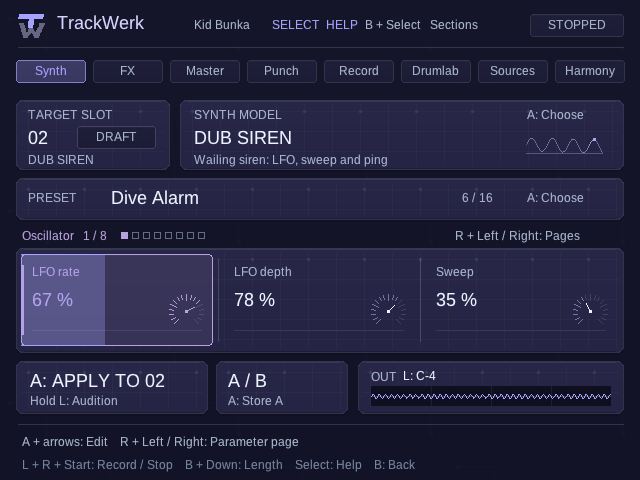
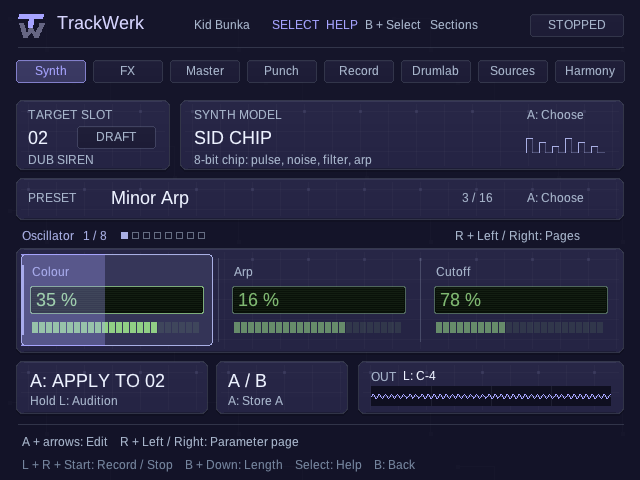
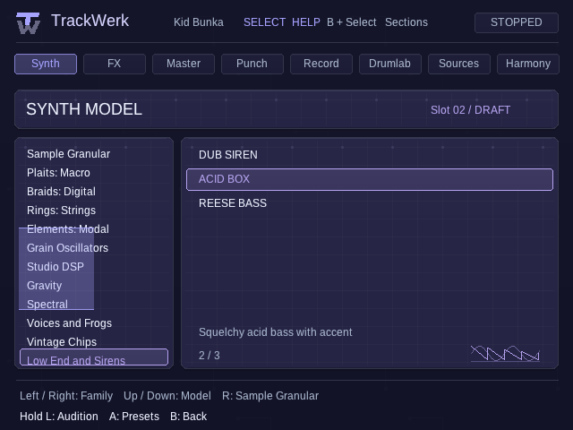

A frog that sings.
A synth you can find.
By Kid Bunka. Use this supplement alongside the core illustrated guide. Interface pictures on this page are renders of the native 640 × 480 screen.
1. Update without losing your work
Choose the package for your device, back up your data folder and follow START-HERE in the ZIP. Projects, samples, presets, settings and themes stay. On Android the APK keeps the app ID and the release signer: install it over your existing TrackWerk and do not uninstall. After the update, SETTINGS shows V1.3.0 in its top right corner.
2. Froggy: type the words, it sings them
Open Studio > Synth, press A on the model row and choose Voices and Frogs > Froggy. Press R + Right to the page called Words. Its third row is Lyrics.
- A + Right opens the on-screen keyboard with the current words. D-pad chooses a key, A types it, B deletes, R + Left/Right moves the cursor, START keeps the text. Up to 120 characters.
- A + Up / Down steps through lyric templates: the
.txtfiles inPresets/Lyrics(six starter lines are written the first time; add your own). - Spell words the way they should sound: "la la ree", "ri-bbit", "kwaak", "sing me a song". The studio tells you how many syllables it found.
- Every note sings the next syllable and the text starts again at the first one when you press PLAY. The Syllable row can pin one syllable instead.

The other rows: Voice (frog, man, woman, child), Croak, Vibrato, Glide (how slowly the mouth moves), Coda (when the last consonants arrive; Off holds the vowel) and Pitch source. The macros are Mouth, Breath and Throat. With Pitch source set to Mic, on Linux builds, Froggy sings the pitch you hum into the recorder (Studio > Record must be listening); on other platforms Mic behaves like Note.
The spelling-to-sound rules and the vowel data come from Chimera Vocal Synth by Jameson Hodge (MIT licence); the voice itself is our own light formant engine, sized for handhelds. See credits.
3. The frog stage
Froggy and Croaker draw a neon frog beside their controls, on the first page ("Stage") and again on the last page ("XY pad"). Its mouth and throat sac follow the real level of what is playing; a new note makes it hop; now and then it flicks its tongue at the firefly, which is the XY pad's dot. Hold L and press the D-pad to move the firefly (X is Mouth, Y is Breath); on a touch screen drag it with a finger. F1, F2 and F3 show the formants the sound gives an "ah". Froggy also shows the sung word karaoke-style. All of this moves only while Scene motion is on.


4. Find a synth faster
The model picker is sorted by purpose: Plaits: Macro, Braids: Digital, Rings: Strings, Elements: Modal, Grain Oscillators, Studio DSP, Gravity, Spectral, Voices and Frogs, Vintage Chips and Low End and Sirens. Each new model has a one-line description, the preset row shows its position (for example 4 / 16) and the pages of Froggy and Croaker have names (Stage, Words, Voice, Timing). Every family has its own control sheet: dials, an LCD, a bar graph.



5. Low end and sirens
Acid Box: a squelchy acid bass (macros Cutoff, Resonance, Env mod; rows Wave, Decay, Accent, Squash, Sub). Reese Bass: three detuned saws that beat and move (macros Detune, Cutoff, Movement; rows Voices, Sub, Resonance, Squash, Drift speed). Dub Siren: a sound-system siren (macros LFO rate, LFO depth, Sweep). Croaker: a croaking frog with throat size and pitch dip. Sixteen sounds each. Use the project's Delay and Reverb sends for echo and space.

6. The TrackWerk Sample Pack
800 one-shots and breaks selected by Kid Bunka: 100 kicks, 100 snares, 100 hi-hats, 100 claps, 100 bongos and congas, 100 extras (shakers, tambourines, small percussion), 100 toms and cymbals, and 100 breaks. WAV, 16 bit, 44.1 kHz, normalised. A second ZIP, Drum Machines Samples, holds 728 sounds of classic drum machines, as recorded. Both are included in the First Install packages. For an existing installation copy the folders into your Samples folder and load them from the sample browser. You may use them in your music, commercial or not; you may not resell them as a sample pack (see the licence file in the ZIP).
7. Also new
- EXPORT > MIDI: the third button writes the song as a Standard MIDI File to
Renders(tempo, one track per audible track, transpose, velocity, swing; effects, grooves and sounds are not included). - Preset inbox: drop
.pti,.ptr,.ptd,.ptsor.ptgfiles intoPresets/Inbox; at the next start readable ones are moved to the right folder, nothing is overwritten. - PRB: a phrase command that plays a row with the chance xx/256 on each pass.
- SAVE keeps the last five versions in
Backups, and saves are durable: temporary writes are flushed and replaced atomically. Keep backups and eject cards safely. - AUDIO DRIVERS overlay (hold L1 + R1 for about a second on any screen) and input monitoring on Studio > Record, contributed by @ozkaoz; an Anbernic R36 Ultra launcher; a PortMaster package; a community test package for Anbernic H700 handhelds.
What was checked
The 99 host checks pass on the release source, the new code also runs clean under AddressSanitizer and UBSan, and an independent code review found no crash and its fixes are in. Kid Bunka tested the program on Android (including touch), TrimUI Brick, Miyoo Mini/Mini Flip, Mini Plus and RGB20S. H700, R36S, R36 Ultra and desktop packages have separate test status in the release notes. A program test does not certify a newly assembled First Install archive.
Device limits
Synth cost depends on the device. On a TrimUI Brick nine voices of Reese Bass use about a fifth of one core; the Miyoo Mini is slower. Pitch source Mic exists on Linux builds only. Touch dragging of the XY pad is for touch screens. Check the actual sample's reuse terms before releasing sampled music.
Which handheld
should play next?
Want TrackWerk on another handheld or operating system? Please open a GitHub issue with the exact model, firmware or OS version, processor and the controls or audio support you can test. Testers and contributors are welcome.
TrackWerk is free and open source. If you would like to help with continued development, testing hardware and new instruments, optional donations are welcome. You can also help by reporting a reproducible problem or sharing music you made.